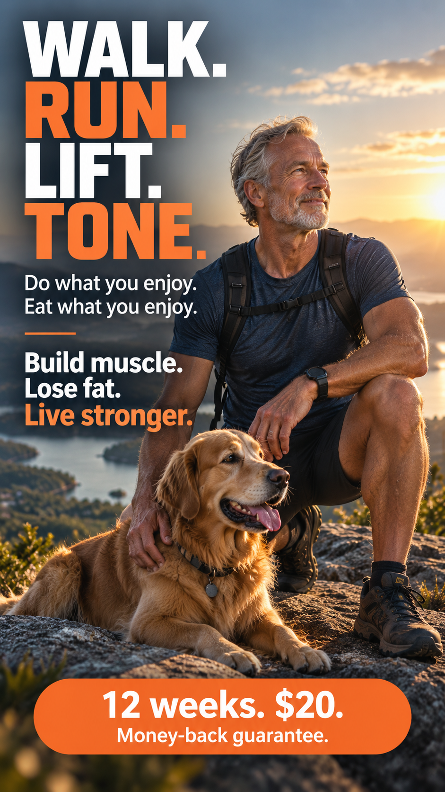

Weeks 1–2
Learn the rhythm: plan, train, log, fuel and recover.

Body composition matters. So do strength, independence, confidence, energy and the ability to keep doing what makes life yours.
Learn the rhythm: plan, train, log, fuel and recover.
Consistency becomes a system. Trends may begin moving in visible or measurable ways.
The goal is not merely to finish. It is to understand what worked well enough to keep doing it.
This version would feature short verified stories tied to measurable change and everyday life.
Hiking, travel, stairs, family and everyday life.
Clothing fit, posture, body image and food relationship.
Strength and habits that stayed after the program.